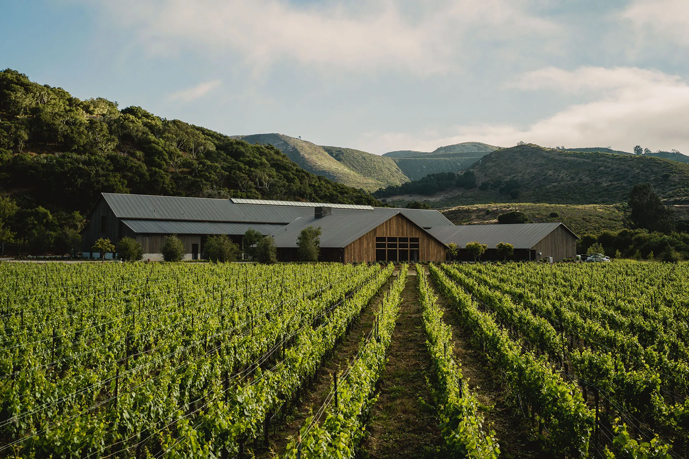

A CFO's lens on AI-augmented business intelligence, applied to Central Coast wineries.
You make the wine. We make sure the customer finds you.
Every day, visitors are searching for a Central Coast winery to visit this weekend, a Pinot to ship to a friend, a tasting room to book for a celebration. Central Coast IQ makes sure your winery is the one they find. We watch the digital surface around your business every month, name what's leaking visitors, and give you the choice: fix it yourself, hand it to us, or send the findings to your existing partners.
Six minutes. A personalized CCIQ Profile. A recommended starting point. No pitch.
Four visitors who would have loved your winery this week. None of them found you.
The weekend planner
Sarah is booking an anniversary weekend in the Santa Ynez Valley. She asks ChatGPT for "a winery with a beautiful patio, great food, and Sunday hours, somewhere quiet." Three names come back. Yours has all three. None of them are yours. Sarah books one of the three, walks in expecting magic, and gets exactly what your Sunday afternoons deliver every week. Your patio sits half empty.
The wedding party
A group of twelve is in town for a Saturday wedding in Los Olivos. They want somewhere fun and lively for Friday night, open later than five, ideally with music. They scroll Instagram and Yelp. Your tasting room runs a vinyl-and-food-truck Friday until eight in summer, but your Yelp still says you close at five and your Instagram has been quiet for three weeks. They book a competitor. Your dance floor sits empty while twelve people go home and tell friends about a winery they loved. Not yours.
The day-trippers
A couple from Los Angeles spends Saturday in Solvang and taps "wineries near me" into Google Maps. The map surfaces the eight closest pins. You are a few miles out of town with a 4.9-star rating, a courtyard with vines climbing the walls, and a tasting room manager who could have walked them into a club membership in forty-five minutes. They never see your pin. You never know they were fifteen minutes away.
The gift buyer
Mike's wife visited a winery in the Santa Ynez Valley two years ago and still talks about the Syrah. He wants to ship her a bottle for their anniversary. He searches "best Santa Ynez Syrah for a gift." Your Syrah won a 93 in Wine Enthusiast last spring. He never finds the review, and he never finds you. He ships a bottle from a name he half-remembers from a billboard.
Your tasting room is beautiful. Your wine is great. The Valley has a deep bench of personable, talented hospitality people who could have made every one of these visits unforgettable. They never got the chance, because the visitors never made it through the door. The gap is not at the door. It is upstream of it, on the digital surface around your winery, and nobody is watching it.
The whole digital surface, watched every month, by one team
Central Coast IQ runs a single coordinated practice across the work that decides whether visitors find you. Every month, on every winery in our coverage, we do three things.
We watch.
Across search, maps, reviews, wine marketplaces, social, and the AI answer engines, we measure where you are showing up, where you are not, and where the wineries you compete with are gaining ground. Eight scoring dimensions, 48 monthly AI prompts, every signal we can capture.
We surface.
When something changes, we name it. A listing went stale. A schema field disappeared after a Commerce7 update. A peer took your AI citation slot. Your Yelp hours went out of sync with your real hours. We turn the change into a one-line finding you can read in ten seconds.
We coordinate.
You decide what happens next. Fix it yourself with the finding in hand. Hand it to us through Engage or Manage. Send it to your existing partners and let them act. Whichever path, the work moves and we track whether it lands.
That is the practice. The Wine Country Intelligence Report is the quarterly view of it. The Monitor scorecard is the monthly view. The Diagnose project is the deep view of one winery. Every product is a different lens on the same continuous work.
One coordinated practice instead of a fragmented vendor stack
Mainstreet IQ brings a CFO's lens to AI-augmented business intelligence, making it affordable for SMBs that can't justify the headcount but can absolutely justify the outcomes. CCIQ is that practice for Central Coast wineries: most operators are already paying for pieces of this; we pull them under one roof, and where you'd rather hire someone else or handle it yourself, we surface the work clearly enough that you can.
The work is already running. You can see it.
Most consultants pitch from a deck. Central Coast IQ is already running the practice across every tracked Central Coast winery, every month. The vendors and tools you are paying separately for, we are running together.
Santa Barbara County wineries tracked today
AI prompts run per month, per winery, across ChatGPT, Claude, Perplexity, Gemini
scoring dimensions applied to every winery, every month
unified frame across SEO, GEO, AEO, listings, schema, social, and reputation
The methodology is on the public record.
Our SEO, GEO, and AEO framework is documented in the SEO vs GEO vs AEO explainer. The eight dimensions we score are detailed on the methodology page. The Drift Watch alerts (Search and AI, Reputation, Discoverability Wall, Schema, Social Cadence) run live on every Monitor scorecard. None of this is theory. It is the work.
The Wine Country Intelligence Report is the visible artifact.
Quarterly, scoring every tracked winery on the same eight dimensions, with quarter-over-quarter movement called out. A sample is one form-fill away.
See a sample of the Report →What CCIQ is worth at your scale
Mid-band annual benefit by operator size. Wine club volume, DTC throughput, and tasting room traffic drive the dollar impact, so each tier delivers a different envelope at different scales.
Two ways to find the right fit
Most operators do not start by picking a tier. They start by figuring out which tier fits. The 6-minute Assessment names a recommended starting point. The comparison strip below lets you scan all six tiers at once.
Most operators are already paying $7K to $30K a year across SEO contractors, social tools, agency retainers, listing services, and reputation SaaS. Central Coast IQ replaces those line items or consolidates them under one practice, for less than the sum of the parts. Each tier below is also priced in the language you already speak.
All six tiers in full detail below. Tap a column header to jump to that tier. Mid-band annual benefit by operator scale is in the Expected ROI table above.
Wine Country Intelligence Report subscription
"What's happening in my market, and where do operators stand relative to each other?"
- Quarterly Wine Country Intelligence Report per county (25-40 page branded PDF): every tracked winery scored on 8 dimensions, AVA spotlights, AI visibility leaderboard, technical findings, quarter-over-quarter movement
- Semi-annual Wine Pricing Report per county (15-20 pages): pricing benchmarks by varietal, scale, channel
- Subscribe to additional counties at 20% off each
- Named position in regional benchmarks if your winery is in our tracking pool
Multi-county subscriptions are invoiced directly. Self-serve checkout covers single-county subscriptions. A free sample summary is available before you subscribe.
Best for: Operators in early evaluation, multi-county subscribers, industry watchers, and journalists who want the regional view without per-winery work. The right entry point if you are still deciding whether to participate or observe.
Ongoing intelligence subscription
Peace of mind that your digital, client-facing presence is as sharp as it can get, every month, not once a year.
"Every winery in the region is being measured monthly. I want to see what you see, when you see it, and act on it."
- Monthly auto-generated scorecard: 8-dim score, peer cohort positioning, AI visibility status, review velocity, technical health snapshot
- Email digest with action items
- Quarterly Wine Country Intelligence Report bundled (one report per subscribed county)
- 1-hour group office hours session each quarter
- Historical trend access: every snapshot since you joined
CCIQ Drift Watch | Five self-monitoring alerts running every month Search & AI · Reputation · Discoverability Wall · Schema · Social Cadence
Most operators audit their website once a year and check on competitors twice. We diff what changed every month and tell you the moment any of it moves on your business.
- Search & AI Drift: algorithm updates, schema requirement shifts, new AI-bot directives, and rendering changes that affect how Google and AI assistants read your site
- Reputation Drift: rating shifts of 0.1+ stars on any platform, owner-response rate decline, sudden cluster of negative reviews, cross-platform rating divergence
- Discoverability Wall: site unreachable to crawlers, Cloudflare or WAF newly blocking AI bots, SSL certificate expiring, sitemap broken, robots.txt change you did not authorize
- Schema Regression: structured data that was present last month and is missing this month (typical cause: Commerce7 or Shopify theme update silently dropping product or LocalBusiness schema)
- Social Cadence Drift: Instagram silent 14+ days, blog silent 60+ days, post engagement rate dropping 30%+, follower decline two consecutive months
Cohort-aware alerts (Peer Movement, AI Visibility Drift) and Pricing Drift Watch are included in Monitor Plus.
Best for: Any operator who wants to act on the data, not just read about the region. Discover keeps the door open if you are not yet ready; Monitor is the floor for participants. Most operators start here.
Deeper analysis subscription
"Monitor watches my business. I also want to know when the cohort around me is moving, and I want help thinking through what to do about it, every month, without committing to a retainer."
Monitor Plus extends the watch beyond your business to the cohort around you. Monitor watches you; Plus also watches your named peers and tells you when they move. On top of the cohort-aware alerts, Plus adds a recurring 1-on-1 conversation with Scott, written commentary, and deeper analysis modules. The next tier up, Engage, adds Scott to the room when partners are coordinating execution.
Drift Watch | Cohort-aware | Three additional alerts about the cohort around you Peer Movement · AI Visibility Drift · Pricing Drift
Run against your custom 6-peer watch list and the regional cohort, not just your own data.
- Peer Movement: when a named peer passes you on total score, takes an AI citation slot you previously held, launches a new wine club tier, or changes pricing materially
- AI Visibility Drift: 30%+ shift in mention count across the 48-query monthly test (12 prompts × ChatGPT, Claude, Perplexity, Gemini), dropping out of a category you previously appeared in, or losing a citation slot to a peer
- Pricing Drift Watch: your pricing position vs. the regional cohort by varietal (alert only; Engage adds Scott's hold/raise/reposition guidance)
What else is included (analysis depth + 1-on-1 access)
- 1-on-1 monthly office hours (30 min) with Scott, replacing the group format
- Monthly written analyst commentary (2-3 page narrative on what changed and why, what's working in the cohort, what to consider this month)
- Custom peer watch list of up to 6 named peers tracked monthly, which powers the cohort-aware alerts above
- Sentiment Synthesizer refreshed monthly (vs. one-time at Diagnose tier)
- Visual Asset Inventory + AI Model Split rendered at depth on each scorecard
- Top-3 prioritized action items per month with effort/impact rationale
Best for: $1M to $3M operators who want depth without retainer commitment, or larger operators who self-execute strongly. Operators stuck deciding between Monitor and Engage often land here.
Project-based analysis
"Tell me what's wrong with my X."
Single-Site Audit | $1,495 / $1,995 with 30-min readout · 5-7 business days
Competitor Benchmark | $2,995 / $3,995 with strategy call · 10-14 business days
Full Business Diagnostic | $4,995 / $7,995 with 90-min session · 14-21 business days
Best for: Operators with a specific concern (a website that isn't converting, peers gaining ground, an unclear next step) who want vendor-ready findings without a long agency engagement.
Strategic marketing oversight retainer
"Help me execute on the plan, and hold my partners accountable so I can stop being the project manager."
Engage is guidance and oversight. Scott advises you and coordinates your partners. You make the calls; Scott ensures you are informed and that partners deliver. Manage adds Scott to the room when the call is made.
What's included
- Everything in Monitor (CCIQ Drift Watch + monthly scorecard + quarterly Wine Country Intelligence Report)
- Monthly 60-min strategic oversight call with Scott; quarterly 90-min strategic review
- 3 to 5 partner tracks coordinated (review response, content, technical, plus social and email at Plus tier)
- 4 to 10 named peers tracked monthly
- Pricing Drift Alert (Engage exclusive): monthly view of how your pricing has moved against the regional cohort by varietal and channel, with guidance on hold/raise/reposition. Plus tier adds margin trajectory and named-peer pricing movement.
- SLA-committed outcomes at engagement: review response rate, wine club growth, DTC lift, AI visibility
Best for: $1M to $5M operators who have execution capacity through partners but lack the strategic oversight layer. Designed for operators at $3M+ where partner-spend economics support the engagement model.
Fractional CFO + CCIQ Intelligence retainer
"I need a fractional CFO who actually understands marketing data, not a finance person who treats marketing as a black box."
Manage is involvement in decision-making. Where Engage advises and oversees, Manage puts Scott in the room when the call is made. Pricing changes, capital allocation, marketing budget shifts, club LTV decisions, hiring, board prep: Scott participates in the decision, not just the post-decision execution.
What's included
- Everything in Engage Plus (marketing intelligence layer + Pricing Drift Alert at Plus depth)
- Annual budget + planning workshop, monthly management reporting package, quarterly client profitability analysis, board-ready package, cash flow forecasting, wine club LTV cohort modeling, marketing ROI bridge, capital allocation memos
- Pricing strategy participation: Scott in the room for the pricing decision itself, including bottle, club tier, allocation, and channel-mix calls
- Manage Plus: monthly board package, monthly capital allocation memo, capital raise prep, M&A advisory, succession and exit planning support, weekly 30-min financial review call, weekly decision-participation cadence
Best for: $3M to $7M+ operators wanting integrated CFO + marketing intelligence under one voice. Plus tier fits operators with a board, investors, or an active capital event in the next 12 to 18 months.
What's in the Wine Country Intelligence Report
Quarterly intelligence on the region your winery actually competes in: pricing, events, tasting room dynamics, marketing moves, and consumer sentiment, pulled from thousands of public data points and curated into something you can act on. One report per county, with subheading for the region covered.
Competitive Pricing Movements
Bottle prices, club tier pricing, tasting fees, food and wine pairings across hundreds of Central Coast wineries. Spot who has raised prices, who has cut, and what the median looks like in your tier.
Event Calendars and Tasting Room Programming
What events competitors are running, how often, at what price points. Release parties, winemaker dinners, pickup events, live music. The programming calendar of the region, compiled.
Social and Review Signals
Instagram cadence, TripAdvisor and Google review velocity, sentiment trends. A signal for which wineries are being talked about, and which aren't.
Visitor and DTC Indicators
Foot-traffic indicators for tasting rooms, hotel and restaurant cross-traffic, wine club acquisition patterns. The downstream metrics that drive DTC revenue.
Regional Trends and Shifts
What's happening across the county. Which varietals are gaining attention. Where new producers are opening. Which regions are consolidating. The macro view most operators can't see while running their own tasting room.
Why This Matters
Most winery owners run the business on instinct because there's no data source built for them. Generic wine industry reports cost $5K and miss the Central Coast entirely. This fills that gap: specific, local, quarterly, and built for operators.
Get the next Wine Country Intelligence Report
Drop your details and we'll let you know when the next quarterly issue publishes. The full report is $1,000/yr Bundle (Wine Country Intelligence Report + Wine Pricing Report) or $250 per single issue. View the sample directly if you want to see what's inside before subscribing.
Central Coast wineries receive the sample within one business day. Everyone else, we'll be in touch.
See the full scoring framework
The eight dimensions we score, the SEO / GEO / AEO landscape, and how AI search is changing winery discoverability are all documented in full on the methodology page.
Where we serve
Central Coast IQ tracks 175+ Santa Barbara County wineries today, with San Luis Obispo County coverage launching Q3 2026 and Monterey County to follow.
Sta. Rita Hills to Santa Maria
175+ wineries tracked across Santa Ynez Valley, Sta. Rita Hills, Los Olivos District, Ballard Canyon, Happy Canyon, Santa Maria Valley, Alisos Canyon. Quarterly Wine Country Intelligence Report and semi-annual Wine Pricing Report shipping now.
Subscribe to Santa Barbara County → San Luis Obispo County (Q3 2026)Paso Robles and Edna Valley
200+ wineries across Paso Robles' Rhone and Bordeaux varieties, plus Edna Valley's cool-climate Chardonnay and Pinot. First published Wine Country Intelligence Report planned for July 2026 launch.
Get notified when SLO launches →Specialty services through our referral network
For project-specific work that does not fit the standard catalog, Mainstreet IQ maintains a network of vetted independent professionals. Scott handles introduction and scoping; the partner engages with you directly under their own terms.